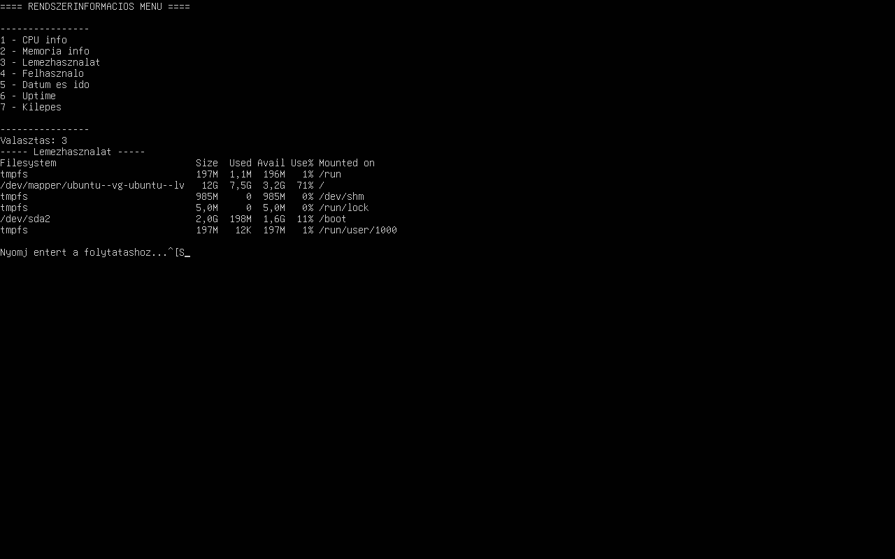

Ez a program egy Linux alatt futó shell script, amely különböző rendszerinformációkat jelenít meg egy menü segítségével.
A program egy menüt jelenít meg, ahol a felhasználó kiválaszthatja, hogy milyen információt szeretne megtekinteni.
A program futás közben:

A script fájl letölthető innen: